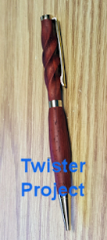
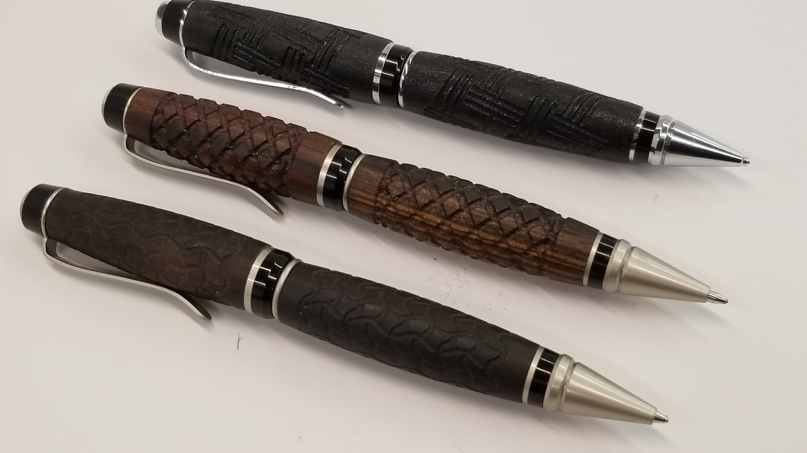

Quick Start for Pen Station Package

This App provides special functions for Pen Making using a Rotary Indexer. This particular page-tab is a Quick-Start for those who purchased the full "Pen Station Package" from Handibot (making use of the blanks that come preloaded and ready to run in your Accessory Base). The second tab is for General Pen Making projects as well as for setting up to do pen making and aligning the Indexer in the Accessory Base. Additional tabs provide more detailed information and preference-setting for your pen-making work.
If you are new to Handibotting, the action of pen making will make a lot more sense if you've first familiarized yourself with the operation of your Handibot. Take the "Tour", get used to the controls, run the test file, and maybe try a few things with the tool before you set it up on your accessory base to start pen-making projects.
Use the Home-Tool Button (below) to set up your tool for creating pens in the Handibot Pen Station Package. The function will automatically Home your Handibot using the normal homing routine (Macro 3); then it uses this App's pen-making offsets to center the X axis over the pen mandrel and position the tool for setting your cutter to the correct Z height. After you've put the router in the mount and positioned the cutter, you'll set the Y location for the first blank.
(The App is set up for the Pen Station Projects, but later on you can change the positioning for your own projects in the Preferences Tab.)
* Before Homing, unplug and remove the Router from the router-bracket and set to one side (if you have not already done so).
In all of the following procedures, Click "Resume" to continue to the next step, unless you need to Quit from the procedure.
HOME TOOL for PENS Set the Home Location for X, Y, and Z Axes for Pen Carving
* After Homing, slid the Router into the bracket and gently lower until cutter-tip just touches mandrel head. Tighten into position (bottom screw first), then plug the Router back in.
You're ready to position tool for cutting the first blank.
Position for Blank 1 Move to start Position for First Blank
After homing, you are ready to run your project, starting with the first blank.
Now, SELECT your Project to start Pen Making!.
The PROJECTS
Patriot Pen Project Twister Project Monogram Project (sample lettering; see documentation)
Great. If all went well, you've machined your Pen Station Project.
SIMPLE Finishing
You're ready to do a little simple finishing.
Release the clamps and pull the indexer board out to the ## stop so you will be able to conveniently apply Aussi Oil while spinning the the newly machined parts. Use a soft rag, start with a tablespoon of oil and apply over the spinning parts. Then apply more!
* Click the next button to spin the indexer while you apply the finish. It will automatically spin about 50,000 degrees and back (3 minutes). Click again for more spinning ...
Spin Indexer
* Congratulations! You've finished making a Pen Station Project.
Your imagination is the limit as you begin to explore your creative opportunities in pen making.
Setting up for Pen Making Projects

This page provides general purpose setup and housekeeping functions for Pen-Making Projects. These will help with alignment and positioning your Handibot for pen-making. You can use the Short Form option (radio-button, below) for simplified access after you get experience with these functions.
If you have not done so... CLICK HERE to Install Pen Making Macros
Start a Pen Making Project
Home the tool to start a pen-making project. The function will automatically Home your Handibot using the normal homing routine (Macro 3) and then it will use the tool's pen-making offsets to center the X axis over the pen mandrel and position the tool for setting your cutter to the correct Z height.
This function assumes that you have used the Indexer Alignment tool, below, and that you have already installed the Macros for Pen-Making projects. Further, you can change the default positioning for these routines in the Preferences Tab. The Detail Tab describes how the various settings and routines all work together.
* Before Homing, unplug and remove the Router from the router-bracket and set to one side (if you have not already done so).
HOME TOOL for PENS Set the Home Location for X, Y, and Z Axes for Pen Carving
* After Homing, slide the Router into the bracket and gently lower until cutter-tip just touches mandrel head. Tighten into position (bottom screw first), then plug the Router back in.
* You're ready to position tool for cutting the first blank.
Position for Blank 1 Move to start Position for First Blank
The next button will take you to the default start position for the second blank. You will use this for cases where the toolpath files for the two blanks are separate.
Position for Blank 2 Move to start Position for Second Blank
OTHER Pen Making Help
Position for Setting New Cutter Position Over Headstock to Set Cutter Z-Height
Move to SAFE Parking Make sure Cutter is Clear of Indexer
Indexer Alignment
You may be just setting up an Indexer for Pen Making, your tool may have been jostled, the mounting of the Handibot or Indexer may be changed from the factory configuration, or something else may have caused the indexer and mandrel to go out of alignment. This routine will check centerline locations of the mandrel for you so you can evaluate whether everything is properly aligned. It will also determine the correct X and Z offsets for the mandre.
Before starting this routine, remove any fittings or bushings from the mandrel. Clamp the tailstock into working location. Then insert 1/4" alignment rod (solid drill rod) into the router. After the rod is in place, you will need to attach the aligator clips to the mandrel as indicated below. Then, use the Keypad to move the drill-rod to the indicated position with the tip about 1/4" below the mandrel. Now, click the Check Alignment button when you are ready.

Check Alignment of Indexer Check the Horizontal and Vertical Alignment of your Rotary Indexer
If you are happy with the alignment, you can use the next button to update the settings for the X and Z offset positions of the mandrel. These are the settings that determine how the homing and cutter positioning routines will work. These values can be inspected and/or entered manually in the Preferences tab.
Record Offset Values from Alignment Update the Positioning Information for Your Mandrel for Use in these Routines
Detailed Info on this App and Pen-Making Macros
This App is intended to help make the pen-making projects of Handibot's "Pen Station" easy to get started with. Additionally, you'll be able to modify settings and variables here so that you can continue to use much of the functionality with other pen projects of for automating your own pen production work. You don't really need any of these tools for using the indexer or making pens, but we think they help make some of the routine work such as aligning, setting up the tool, and positioning during pen carving more straightforward. And, they provide programming examples if you want to set up this kind of App for yourself.
Getting the Tool Aligned and Determining Offsets
The general strategy is to provide tools that help with aligning the indexer, or checking alignment, and then provide tools that help put the appropriate location "offsets" in place (moving the working zero locations) for running pen-carving files -- once set up, you can just turn your Handibot on, run the pen-making homing routine, and you are ready to cut.
Homing Tool for Pen Work
The primary function for normal pen-making work flow is "Homing". Homing is always the starting point. The tool will first home in the normal fashion (using Macro 3). Then, it will use the stored offsets for pen making (created in the previous step) to shift the X and Z zero directly over the Rotary Indexer. The tool retains the Y zero from the initial zeroing, but uses temporary offsets from it to position the cutter over blanks. This system gets you in position for accurate pen-making and makes it possible to return to your exact position in a file if for some reason cutting is disrupted (e.g., power failure or cutter damage). And just a note, as you became aware in your initial Handibot Quick Start, Homing WILL MAKE SOME NOISE as the tool hits the END STOPS to locate it position.Preference Settings for Pen Turning
This page allows you to monitor and edit the special variables used for Pen Turning. The initial/default values are for the use with the Projects that come with the Pen Station Package from Handibot and should be correct for your Handibot if it was set up at the factory. If you have set up your own indexer for pen making, you will need to use the alignment functions on the "Pen Making" page to correctly set your variables.
Variable preferences are saved using a system of "persistent variables". That is, they will be remembered even when you turn off your tool and turn it back on. The default values for these variables are saved in Macro 60 and can be restored to their original values by running Macro 60.
Make sure to hit the SAVE button after editing any these variables.